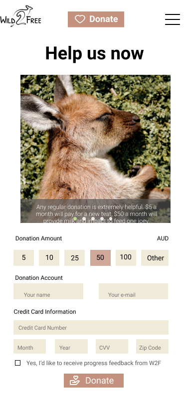

Background
Australia is a paradise of wildlife over the world. Many of native wildlife can only be found in Australia. Kangaroos, koalas, wallabies, and wombats have all become Australian icons. (Gofoundme, 2020). During the Black Summer bushfires of 2019-2020, around three billion native wildlife and pets were killed or displaced and millions of square hectares shelter were destroyed as devastating bushfires tore through the country. (Bushfire help, 2020).
Organization description
Wild 2 free is an Australia charity organization that mainly focuses on rescuing, rehabilitating, and releasing injured and orphaned native wildlife, predominantly kangaroos, back into the environment. They operated an animal shelter at the NSW South Coast on acreage within the Mogo State Forest. Unfortunately, the shelter was destroyed by the Black Summer bushfires in January 2020, but they are trying to rebuild their home in order to continue proving a safe environment for native animals.
Research brief
Background research was conducted by collecting evidence of background information and user research. A method of Mindmapping was applied to provide an overview understanding of the purpose of this organization. The user research with interviews and questionnaire properly collected information then sorted out several key insights that provided better views in different user groups. In the end, user profiles created based on all of the information gained from user research.
Mindmapping
Integrated background research, a mind map was made up for answering the questions of Who, What, When, Where, Why, and How to form as the WWWWWH framework. This mind map will illustrate an overview understanding of what this organization worked for, how they achieved their goal, and what this organization really need. All of these understandings will lead to conduct better user research.

User reserach
- Interview -- Based on 5 informal user interviews, some key insights can be concluded as blow:
- Typical donors for animal protection charity, like wild 2 free, are young female who are kind-hearted for helping animals and love cute kangaroo and koala.
- 3 out of 5 interviewees complained the reason why they don’t want to donate is the authenticity of information on the internet. There are lots of organization under the guise of helping animals to scam. It was hard to distinguish whether they are fake or not.
- A few of interviewees feel the content in charity website is tedious and disordered, which hardly attracts people to stay on that website for a long time， not to mention the understanding of what this organization doing. In today’s fast-paced network environment, people need simple, easy-understand, but also appealing content to obtain their attention, such as short video, animation, or documentary.
- Compared to how much they donate, donors want to know more about where their money goes, how the organization spend their money. In another word, real feedback and update are supposed to provide after donation. In this way, especially for helping wildlife, donors can feel how actually helps they give are beneficial to animals, and wildlife is not far away from their life.
- Questionaires -- In order to insight into people’s behaviours, attitudes and perspectives toward current experiences with existing animal protection charity, a questionnaire was conducted to collect more feedback from users directly. Based on this, a few key insights are gathered from 45 users’ data as below:
- Users are more interested in organizations’ strategies and cost-effectiveness. A question asked as, “What do you want to know about the animal charities you may donate?” Answerers were able to have more than one options. Here are the answers and the percentage of answerers selecting. According to this data’s suggestion, the charity website will serve their audience better if they also discussed organizations’ strategies and cost-effectiveness.
- The impact is the user most considerable factor in deciding which organization to support. A question asked as, “Regarding donations, what is the most valuable information that you will focus when deciding which animal charities to support?” Here are the answers’ data on the diagram. It is noticeable that ‘impact’ is the most popular choice. Thus, a new design of an animal charity website will also emphasize what’s the impact of this organisation for both animals and the environment.
User Profiles
User profiles are conducted to present key attributes of different identified users through overall viewing of user types then get a full spectrum of possible users.(Tomitsch, 2018).

Target Audience for Website Proposal
Through an exploration of 3 user profiles, the most suitable target audience is a group of prudent donors, young-middle-aged adults( between 23-40). This group of people have relatively strong compassion and empathy toward animals. Meanwhile, They are tech-savvy and familiar with all of the information channel, which means the ability to unlimited access information. That will give huge freedom for website design especially for exploring the different structure or new functions. Besides, most of them understand the native wildlife’s misfortune in bushfire 2020, and likely to help them on the financial aspect.
The concept
In term of the problems (authenticity, feedback, and unrelated to their life) existed in current animal protection charity, this website will begin from the impact of bushfire 2020 which everyone familiar with, then make people understand how much these animals need help. The most important is that this charity has a kind of special connect with such cute wildlife. People can not only donate to help them, but also adopt them online via this website. Donors can have a video link with their adopted animal, and watch them, feed them, even interact with them by video. In this way, donors can have their cloud pets. It is very meaningful for people to experience the whole process of helping wildlife rehabilitate from great trauma in a bushfire. All of these will show the authenticity, feedback and impact of this organization as well.
Ideation
Moving forward from the concept to develop ideation process. Below are the mood bards, sitemaps and sketches conducted to generate the basic styles, ideas and website structures.
1st and 2nd Mood Boards
3nd Mood Boards
Sitemap
During the iteration of sitemaps, the structures of the website are noticeable and easy to understand. The sitemaps will also lead to the distribution of complex content to a clear workflow.
The initial sketch of sitemap.
Overall sitemap structure.
Sketches
Sketches were conducted by following the structure development of sitemaps. Through the process of sketching to visualise ideas, design elements, and different structure, a better content of web page can be explored and also combined with various inspiration from the moodboards.
Landing page

For this iteration, different layouts have been tried to make a more attractive first landing page. At the end, I decided to use the No.5 design in order to bring a strong visual impact with a wide picture, then added a big title on top of that directly.

"About us" page
This page is going to be a scrollable from top to bottom, so each part is actually follows. Users can slide down to check information one by one or navigate through the navigation bar, which can be accessed by clicking anywhere in that area.

"Cloud pets" page
This page explored another way of donating. Besides directly choose money, I found that gave users more kinds of helping option for helped animals they liked will bring more funs in the donation process. Also, this process will have an option for cloud feeding and raising, which makes users more active with interaction in online donation. The final concept going with the third one. Card type of information looks tidier and clearer.

"Donate" page
This is the last page and the most important part which exploreing with different types of desgin elements. The main concept of page is providing clear, simple, but appealing user interface for donating. In the end, I decide to use concept 4, which divide screen into two parts. On the left part, there are several photoes to show the organization's cost-effectiveness, like how many animals they help per dollar donated. On the other part, there is a form of collecting donors information combined with many types of interactive elements to present an effective and convenient collection process.
"Mobile devices" sketch
For this part, there is a sketch of mobile screenflow to show how all of elements fit in mobile devides. The all of screens and functions are similar with desktop version.

Designs
Based on the development and exploration of my sketches, I developed my design through both wireframes the overall structure and establish mockups of proposed website to present more visual aesthethics and visual impact.
Wireframes
The development of wireframe for both desktop and phone are presenting below. All of wireframes were done on Balsamiq Wireframes.
Landing page
"About us" page


"Cloud pets" page


"Donate" page
Mockups
Mock-ups are conducted at finally, which adding visual aesthethics and styles to my wireframes. I conducted this whole process within Figma.
"Home" page


"About us" page


"Cloud pets" page


"Donate" page


References
- All of photo used in this proposal retrieved from: https://unsplash.com/
- BushfireHelp. (2020). Retrieved from: https://www.bushfirehelp.org/organisations/wild-2-free-kangaroo-sanctuary
- Gofundme. (2020). Retrieved from: https://au.gofundme.com/
- World Animal Protection. (2020).Our beliefs we move the world to protect animals. Retrieved from: https://www.worldanimalprotection.org.uk/about/our-beliefs
- World Animal net (2020). Targeted Research. Retrieved from: http://worldanimal.net/targeted-research
- Mercer, P. (2020). Wildlife Catastrophe Caused by Australian Bushfires. Retrieved from: https://www.voanews.com/east-asia-pacific/wildlife-catastrophe-caused-australian-bushfires
- Tomitsch, M., Wrigley, C., Borthwick, M., Ahmadpour, N., Frawley, J., Kocaballi, B., ... & Loke, L. (2018). Design. Think. Make. Break. Repeat. A handbook of methods. Bis Publishers.